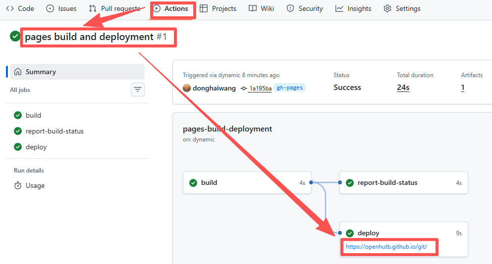

OpenHUTB Page 模板
欢迎使用 OpenHUTB 的 Github Page 模板文档 1。
1. 简介
1.1 mkdocs简介
- mermaid 图表渲染支持
graph LR
K[键盘输入] -->|pynput 监听| T[drone_ros_teleop 键盘发布节点]
T -->|/drone/cmd_vel Twist 10 Hz| B[drone_ros_node 桥接控制节点]
B -->|AirSim RPC 41451| A[Windows 宿主机 AirSim 模拟器]
-
显示图片


2. 表格
普通表格
| 命令 | 描述 |
|---|---|
make help |
打印所有可用的命令。 |
跨越多行和多列
+---------+----------+------+
| 控制方案| 值 | 动作 |
+=========+==========+======+
| | `[0]` |向前走|
+ +----------+------+
| 离散 | `[1]` |向后走|
+ (`0`) +----------+------+
| | `[2]` | 右转 |
+ +----------+------+
| | `[3]` | 左转 |
+---------+----------+------+
| 连续 | `forward_speed`,|
| (`1`) | `rot_speed` |
+---------+----------+------+
|
控制方案 |
值 |
动作 |
|---|---|---|
|
离散 |
|
向前走 |
|
|
向后走 |
|
|
|
右转 |
|
|
|
左转 |
|
|
连续 |
|
|
+-------+----------+------+
| Table Headings | Here |
+-------+----------+------+
| Sub | Headings | Too |
+=======+==========+======+
| cell | column spanning |
+ spans +----------+------+
| rows | normal | cell |
+-------+----------+------+
| multi | cells can be |
| line | *formatted* |
| | **paragraphs** |
| cells | |
| too | |
+-------+-----------------+
渲染为：
|
Table Headings |
Here |
|
|---|---|---|
|
Sub |
Headings |
Too |
|
cell |
column spanning |
|
|
normal |
cell |
|
|
multi |
cells can be |
|
如果对文档中的任何问题可以在 本文档的源码仓库 中的 问题 页面讨论或者提交 拉取请求 直接修改文档。
参考文献
-
He, K., Zuo, C., Ma, C. & Sui, Y. DynSyn: Dynamical synergistic representation for efficient learning and control in overactuated embodied systems. arXiv preprint arXiv:2407.11472 (2024). ↩